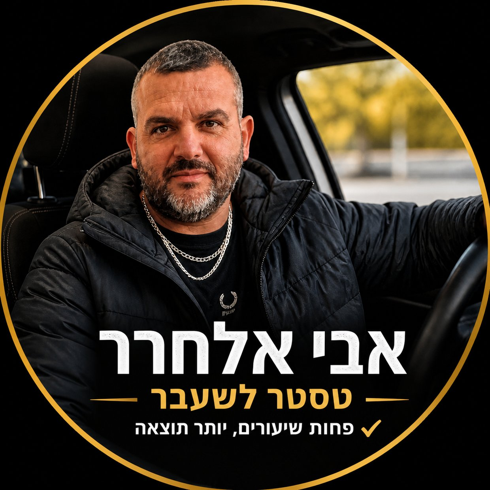
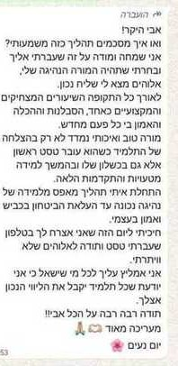
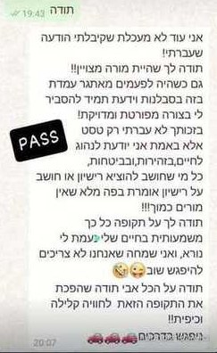
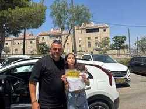

תוכנית מסלול שקופה
כבר בשיחה הראשונה מקבלים הערכת מסלול ברורה: מה לומדים, כמה זמן צפוי, ומה המדד להתקדמות.
מורה נהיגה וטסטר לשעבר • ירושלים ומעלה אדומים
בונים נהיגה בטוחה וחכמה עם תוכנית מותאמת אישית, שקיפות מלאה וקצב שמכבד את הזמן שלך.

כבר בשיחה הראשונה מקבלים הערכת מסלול ברורה: מה לומדים, כמה זמן צפוי, ומה המדד להתקדמות.
תרגול ממוקד על נקודות שמכשילות בטסט, עם פידבק חד וקצר במקום ״עוד שיעור ונראה״.
זמינות מהירה, תזכורות מסודרות, סיכום קצר אחרי שיעור ויחס מכבד לכל תלמיד ותלמידה.
מורה נהיגה מוסמך מטעם בית הספר לנהיגה יוני — אחד מבתי הספר הוותיקים והמובילים בירושלים, שפועל מאז 1976.
שנים של ניסיון בהוראת נהיגה, עשרות תלמידים שעברו טסט בהצלחה ויצאו לדרך עם ביטחון מלא.
לימוד נהיגה על רכב אוטומטי מודרני ומטופח, שמאפשר להתרכז בנהיגה עצמה ולא בגיר.
כל תלמיד מקבל תוכנית לימוד מותאמת לקצב שלו, עם סבלנות ויחס חם. אבי מאמין שהדרך לרישיון צריכה להיות חווית למידה חיובית.
מתמחה באזורי הטסט — ארנונה, תלפיות, מלחה, טלביה והסביבה. ביום המבחן, אין הפתעות.
אחד מבתי הספר הוותיקים והמובילים בירושלים, פועל מאז 1976. מלמד נהיגה על כלי רכב ידניים ואוטומטיים, אופנועים ומשאיות.
בני בתירא 6, ירושליםתהליך ברור ושקוף מהרגע הראשון ועד הרישיון ביד.
שיחה קצרה להכיר, להבין את הרקע שלך ולבנות תוכנית לימוד מותאמת אישית.
לימוד נהיגה מעשי על רכב אוטומטי, עם תרגול ממוקד באזורי הטסט עצמם. כל שיעור בנוי על הקודם.
סימולציה מלאה של טסט חיצוני כדי לוודא שאתם מוכנים. תיקון נקודות חלשות לפני היום הגדול.
ליווי מלא ביום הטסט, עם ביטחון וידע מוכח. יוצאים לדרך עם רישיון ונהיגה בטוחה.
מחירים ברורים ושקופים. בלי הפתעות, בלי אותיות קטנות.
מתמחה באזורי הטסט של ירושלים. מכיר כל צומת, כל סימון וכל נקודה שמכשילה. השיעורים מתקיימים באזורים שבהם מתבצע הטסט בפועל — כך שאתם מגיעים ליום המבחן עם יתרון משמעותי.
התרגול מתבצע באזורי הטסט עצמם — כך שביום המבחן, המסלול כבר מוכר.
אזור ארנונה-תלפיות הוא אחד ממוקדי הטסט המרכזיים בירושלים. המסלולים כוללים רחובות צרים עם חנייה דו-צדדית, כיכרות מרובות ועליות תלולות. אבי מכיר כל נקודה מכשילה — מהכניסה לכיכר דרק ועד הפנייה ברחוב בית לחם. התרגול המקדים על המסלולים האלה מעניק יתרון אמיתי ביום הטסט.
מעלה אדומים היא אזור טסט פופולרי עם מסלולים ייחודיים — כבישים בין-עירוניים, ירידות ועליות, כיכרות גדולות וכניסות למגרשי חנייה. אבי מלמד על מסלולי הטסט בפועל במעלה אדומים, כולל תרגול הנסיעה בכביש 1 והכניסה לעיר. תלמידים מאזור מעלה אדומים, מישור אדומים וכפר אדומים נהנים משיעורים באזור המגורים שלהם.
אזור מלחה-טלביה מציע מסלולי טסט עם שילוב של רחובות שקטים ועורקים ראשיים. הנקודות שדורשות תשומת לב מיוחדת: מעבר הולכי רגל ליד הקניון, הפנייה לרחוב חובבי ציון, וכניסה לכיכרות. אבי מתרגל עם התלמידים את כל התרחישים האפשריים באזור הזה.
הביקורות מדברות בעד עצמן — תלמידים מספרים על החוויה שלהם עם אבי.


״התחלתי את לימודי הנהיגה עם חשש רציני מהכביש. אבי היה סבלני ברמה שלא האמנתי — בנה לי ביטחון שיעור אחרי שיעור. אחרי 32 שיעורים עברתי טסט בארנונה מהפעם הראשונה. ממליץ בחום לכל מי שמחפש מורה נהיגה בירושלים!״
— יוסי מ., ירושלים, עבר טסט בהצלחה
״עברתי מורה נהיגה קודם ולא הרגשתי שאני מתקדמת. מהשיעור הראשון עם אבי הבנתי שהגישה שלו שונה לגמרי — מסודר, מקצועי, ומסביר כל דבר עד שזה ברור. עברתי טסט במעלה אדומים בלי שום בעיה. תודה אבי!״
— שירה א., מעלה אדומים, עברה טסט מהראשון
״הבן שלי למד אצל אבי ועבר טסט בפעם הראשונה. מה שאהבתי זה שאבי שלח לנו עדכונים על ההתקדמות. ידענו בדיוק באיזה שלב הבן ומתי הוא יהיה מוכן לטסט. שירות ברמה אחרת. ממליצים על אבי אלחרר בלי לחשוב פעמיים.״
— משפחת כהן, ירושלים
״למדתי נהיגה על אוטומטי עם אבי. היתרון הגדול הוא שהוא מלמד על מסלולי הטסט האמיתיים בתלפיות וארנונה. ביום הטסט ידעתי בדיוק מה לצפות בכל פנייה. 95% הצלחה זה לא סתם — אבי באמת מכין אותך ברמה הכי גבוהה.״
— דניאל ר., ארנונה, ירושלים
רגעים של גאווה — תלמידים שסיימו את המסלול בהצלחה ויצאו לדרך עם רישיון ביד.

מתכננים להתחיל לימודי נהיגה? הנה כל מה שחשוב לדעת לפני שמתחילים את הדרך לרישיון.
לפני שמתחילים לימוד נהיגה בישראל, צריך לעמוד במספר תנאים: גיל מינימלי 16 ותשעה חודשים, סיום קורס עזרה ראשונה מוכר, בדיקת עיניים ופתיחת תיק במשרד הרישוי. לאחר מכן מקבלים "טופס ירוק" מבית הספר לנהיגה שמאשר את תחילת הלימוד המעשי.
בחירת מורה נהיגה טוב היא ההחלטה החשובה ביותר בתהליך. חפשו מורה עם סבלנות, ניסיון באזור הטסט שלכם ושיטת לימוד ברורה. מומלץ לשאול חברים שסיימו לאחרונה ולבדוק ביקורות. שיחת התאמה לפני השיעור הראשון עוזרת להבין אם יש "כימיה" בין התלמיד למורה.
הלימוד המעשי כולל בממוצע 28-40 שיעורים (תלוי בתלמיד). בשיעורים הראשונים לומדים את הבסיס — הגה, בלמים, גז ומראות. בהמשך מתקדמים לנסיעה עצמאית ברחובות, כיכרות, חניה ונסיעה בין-עירונית. בשלב האחרון מתרגלים על מסלולי הטסט עצמם.
מבחן הנהיגה המעשי נמשך כ-20 דקות ובודק שליטה ברכב, ציות לחוקי תנועה, תצפית ובטיחות. אזורי הטסט בירושלים כוללים את ארנונה, תלפיות, מלחה, טלביה ומעלה אדומים. הכרת המסלולים מראש והתרגול עליהם מעלים משמעותית את סיכויי ההצלחה.
תשובות לשאלות שהכי מעניינות תלמידים חדשים.
זה משתנה מתלמיד לתלמיד. בממוצע, תלמידים שלומדים לראשונה צריכים בין 28-40 שיעורים. בשיחת ההתאמה נבנה תוכנית מדויקת לפי הרקע שלך.
כן, הלימוד הוא על רכב אוטומטי מודרני ומטופח. רכב אוטומטי מאפשר להתרכז בנהיגה הבטוחה עצמה, ללא הסחת דעת מההילוכים.
השיעורים מתקיימים באזורי הטסט של ירושלים ומעלה אדומים — ארנונה, תלפיות, ארמון הנציב, מלחה, טלביה, הר חומה, מעלה אדומים ועוד. התרגול על המסלולים האמיתיים נותן יתרון משמעותי ביום הטסט.
הטסט הפנימי הוא סימולציה מלאה של הטסט החיצוני — אותם מסלולים, אותם קריטריונים. המטרה היא לוודא שאתם מוכנים לפני שיוצאים לטסט האמיתי, ולתקן נקודות חולשה אם יש.
פשוט! שלחו הודעת ווטסאפ או השאירו פרטים בטופס יצירת קשר בתחתית הדף. אבי יחזור אליכם תוך זמן קצר לקבוע שיחת התאמה.
שיעור רגיל נמשך 40 דקות, שיעור כפול — 120 דקות. שיעור כפול מאפשר להתעמק יותר בנושאים, לתרגל מסלולים שלמים ולהתקדם מהר יותר. הרבה תלמידים מעדיפים שיעורים כפולים.
אבי הוא מורה נהיגה מוסמך מטעם בית הספר לנהיגה יוני — אחד מבתי הספר הוותיקים והמובילים בירושלים, שפועל מאז 1976.
שיעור נהיגה בודד (40 דקות) עולה ₪190, ושיעור כפול (120 דקות) עולה ₪380. המחירים כוללים לימוד על רכב אוטומטי מודרני באזורי הטסט של ירושלים ומעלה אדומים. ניתן לראות את המחירון המלא בעמוד המחירים באתר.
ההכנה הנכונה היא המפתח. אבי מתרגל עם התלמידים על מסלולי הטסט האמיתיים בירושלים — ארנונה, תלפיות, מלחה וטלביה. כל שיעור כולל תרגול של הנקודות שהטסטרים שמים לב אליהן: בדיקות מראות, עצירה מלאה בסטופ, כניסה לכיכרות ועוד. בנוסף, לפני הטסט מתבצע טסט פנימי שמדמה את המבחן בדיוק.
לפי חוק, ניתן להתחיל לימוד נהיגה מגיל 16 ו-9 חודשים, ולגשת לטסט המעשי מגיל 17. לפני תחילת הלימוד המעשי יש לעבור שיעורי עזרה ראשונה ולקבל תעודת "טופס ירוק" מבית הספר לנהיגה.
ברכב אוטומטי אין צורך לעבוד עם מצמד והילוכים, כך שהתלמיד מתרכז בנהיגה עצמה — שליטה בהגה, מראות, תמרון ותצפית. רוב התלמידים מגיעים לרמה גבוהה יותר מהר יותר עם אוטומטי. הרישיון שמתקבל תקף גם לרכב ידני (לאחר השלמה קצרה).
התהליך לוקח בממוצע 3-5 חודשים, תלוי בתדירות השיעורים ובקצב ההתקדמות של התלמיד. מי שלומד 2-3 פעמים בשבוע מתקדם מהר יותר. אבי בונה תוכנית אישית עם יעדים ברורים לכל שלב.
בהחלט! אבי מתמחה גם בתלמידים עם חרדת נהיגה. הגישה היא סבלנית ומותאמת — מתקדמים בקצב שלך, בלי לחץ. הרבה תלמידים שהגיעו עם פחד גדול סיימו את התהליך עם ביטחון אמיתי על הכביש.
זה קורה, ואין סיבה להתבייש — אחוזי ההצלחה הארציים בטסט הם כ-50%. במקרה של כישלון, אבי עושה ניתוח של מה השתבש, מתרגל את הנקודות הספציפיות ומכין אותך מחדש לטסט. רוב התלמידים עוברים בניסיון השני.
אבי מציע שעות גמישות לאורך השבוע, כולל שעות אחר הצהריים וערב. לתיאום שעות ניתן ליצור קשר בווטסאפ או בטלפון ולמצוא את השעות שמתאימות לכם.
ביום הטסט צריך להביא תעודת זהות (או דרכון + תעודה מזהה נוספת), טופס ירוק (אישור בית ספר), ותעודת עזרה ראשונה. כמובן שחשוב להגיע רגועים ומנוחים. אבי מלווה אותך ביום הטסט ועושה שיעור חימום לפני המבחן.
השאר/י פרטים ונחזור עם מסלול לימוד מותאם אישית תוך זמן קצר.